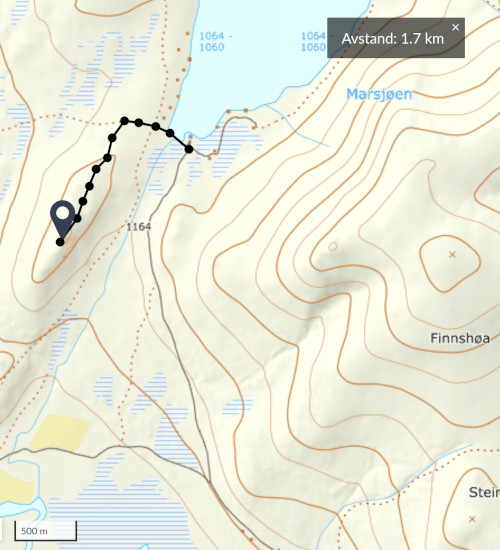
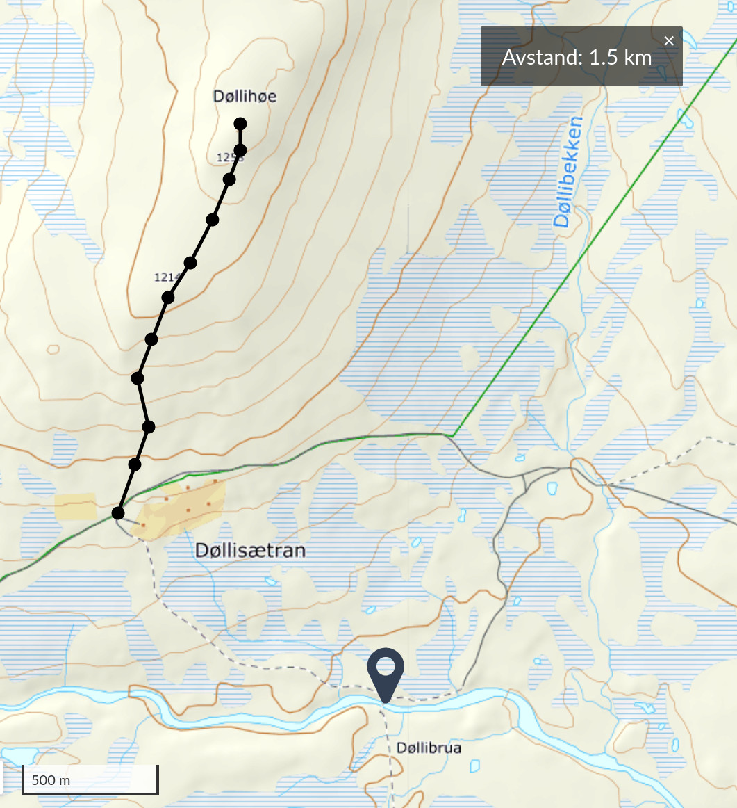
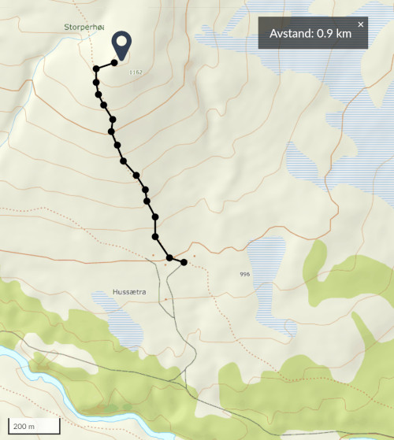
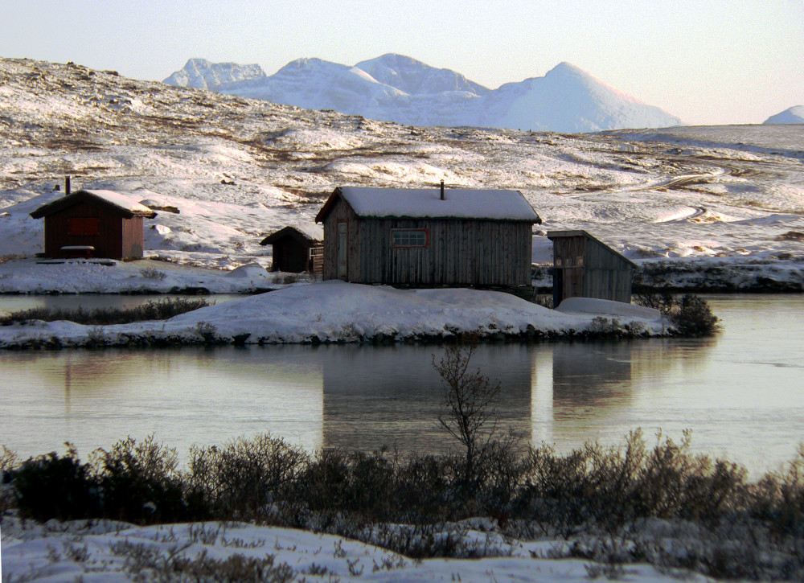
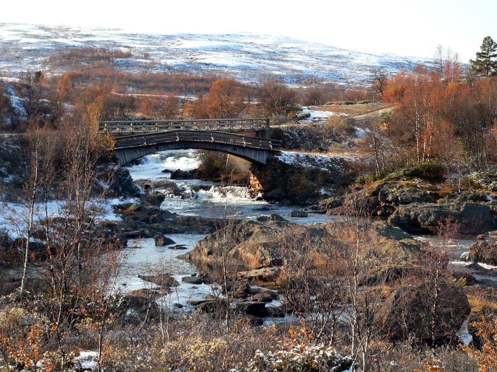

Foto: Nils-Jørgen Kristiansen
1,7 km
fra Marsjøen
1,5 km
fra Døllisætre
0,9 km
fra Hussætra
Foto: Norges geologiske undersøkelse (NGU)
Kjerringa
Råtåsjøen
Klemetsbrua

Romsdalssetra har en sjarmerende beliggenhet ved elvebredden, og tilbyr vakre alternativer for sykkelturer, fiske, bading, camping og fotturer i fjellet.
Flere av setrene i området er fortsatt i aktiv drift, inkludert den velkjente Kjøllhaugsetra. Om sommeren kan du besøke budeia, Gun Kjølhaug, som serverer autentisk setermat med røtter i tradisjonen.